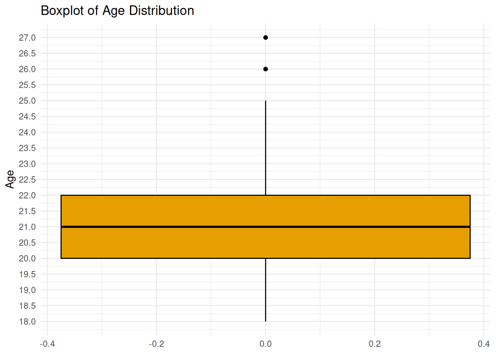
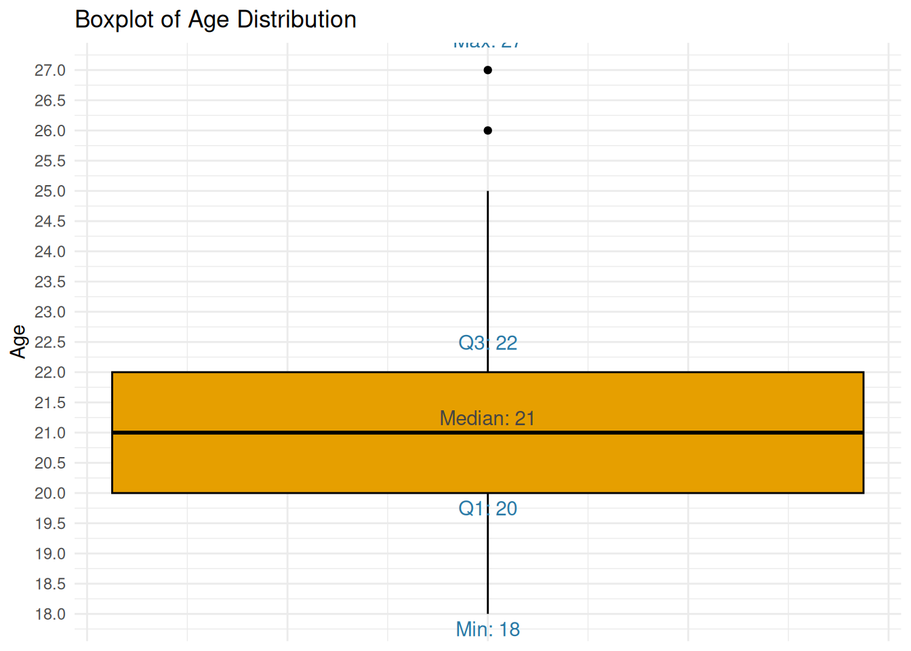
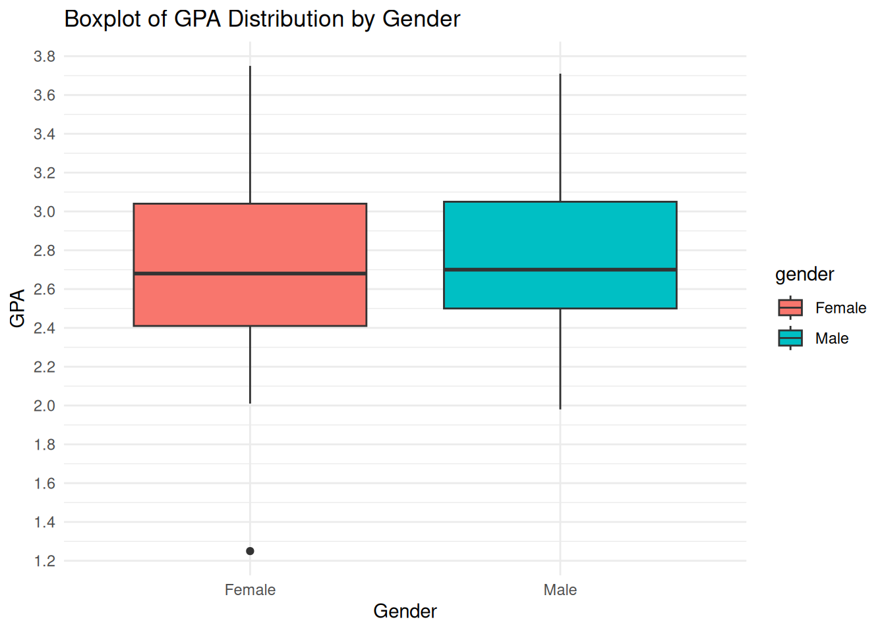
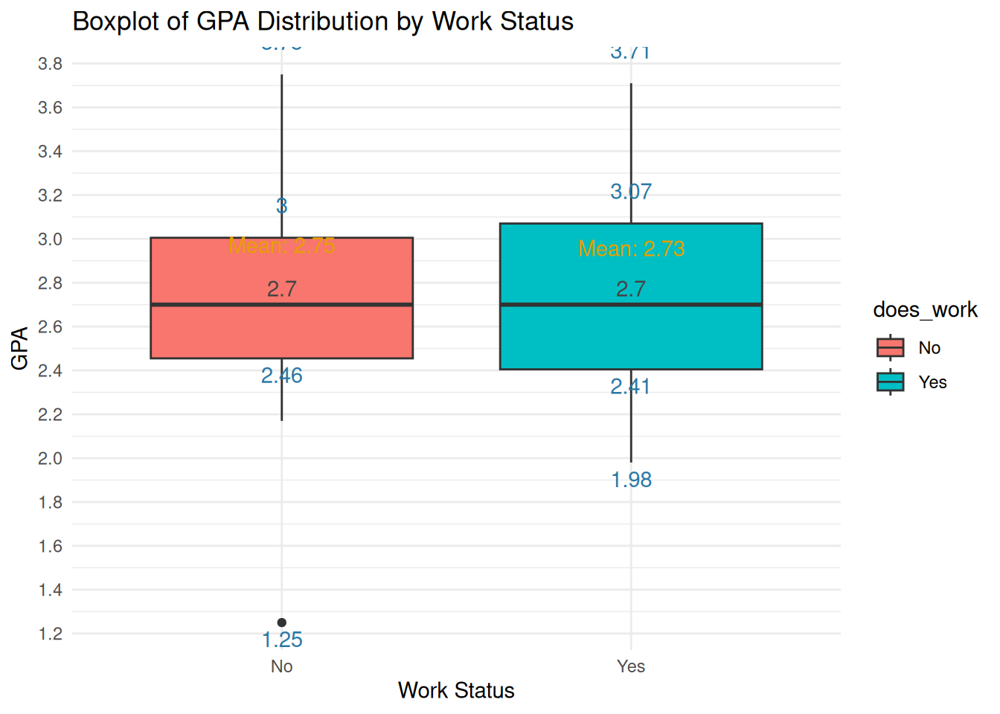
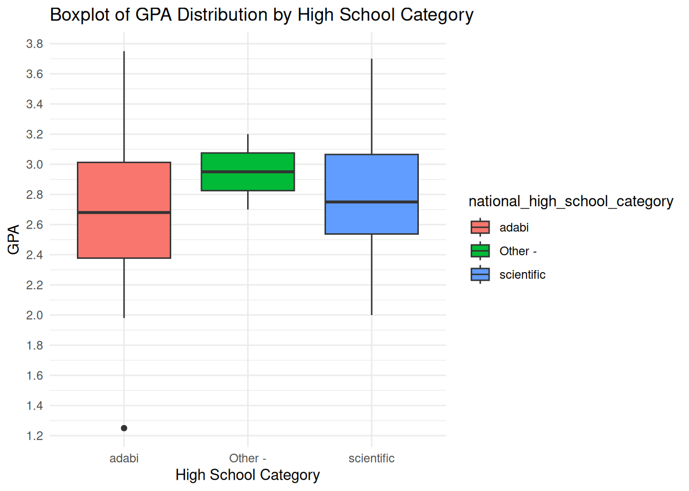
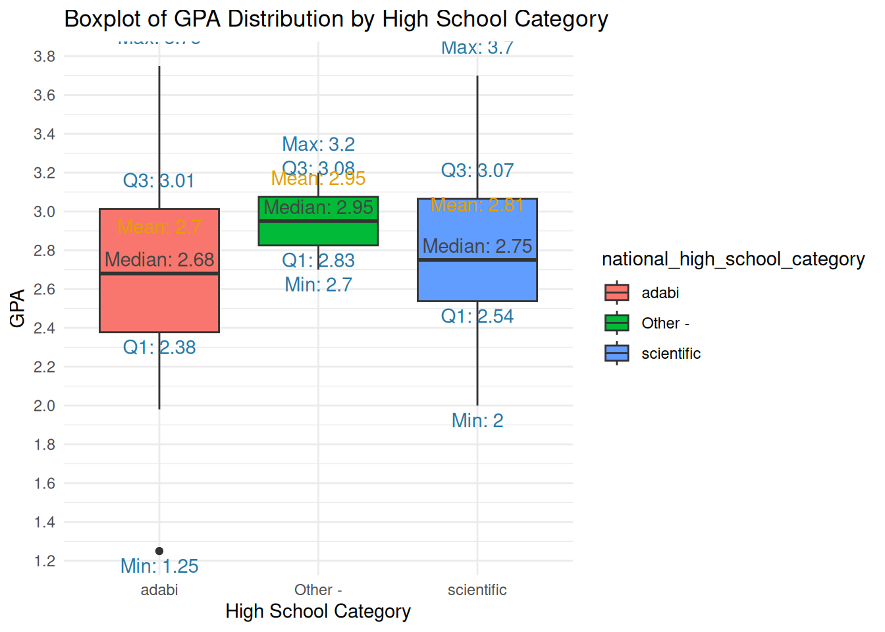
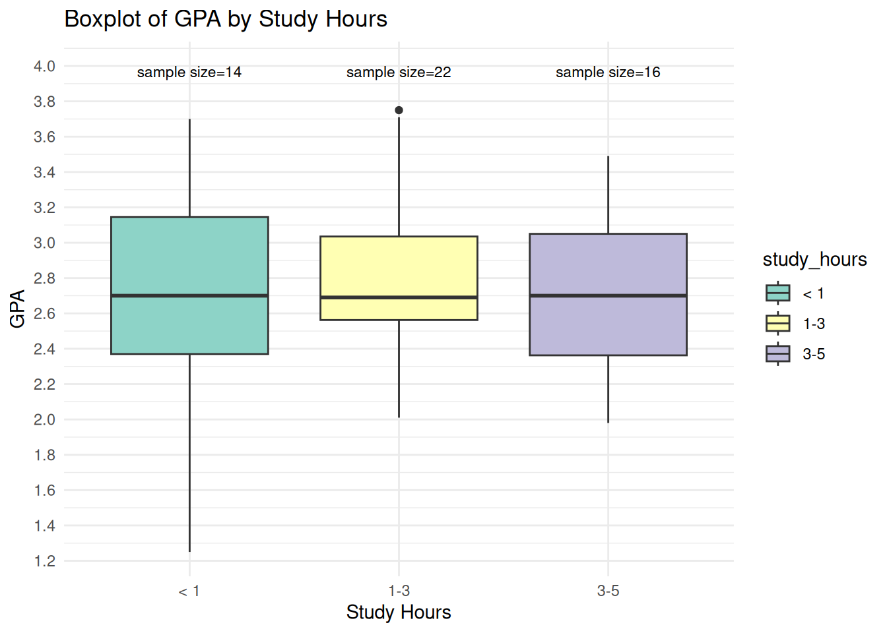
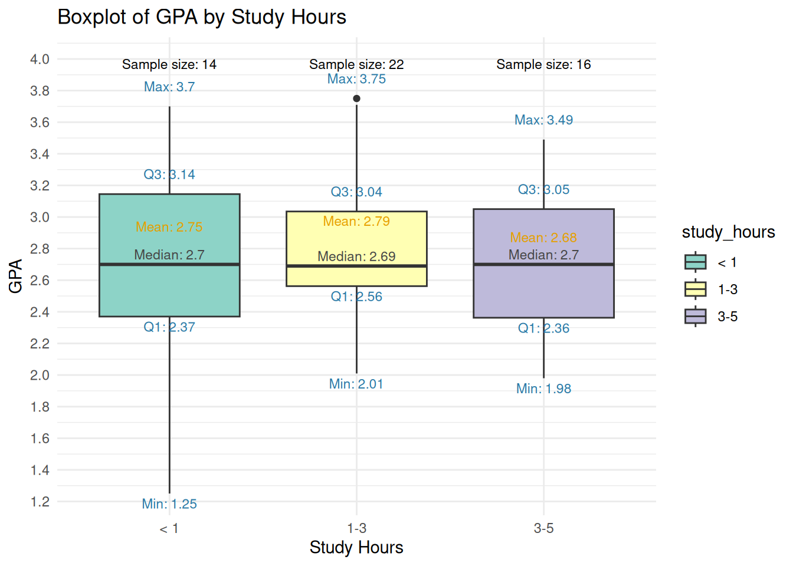
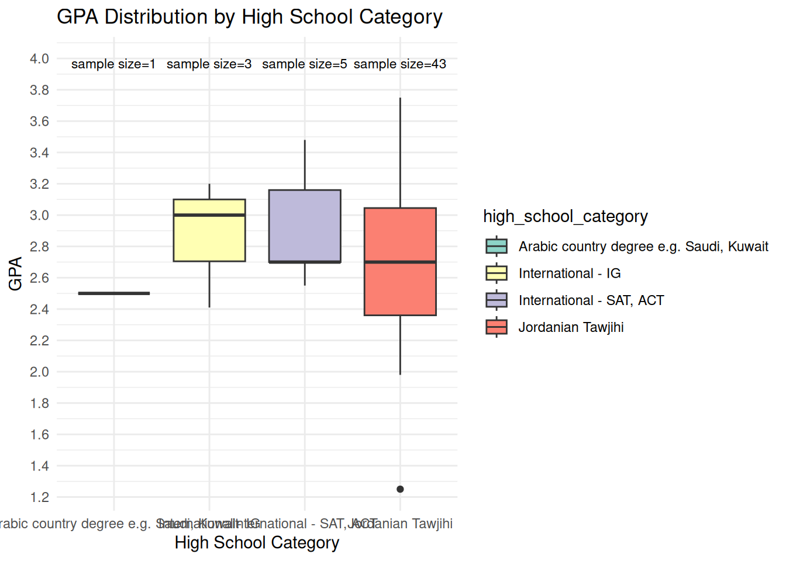
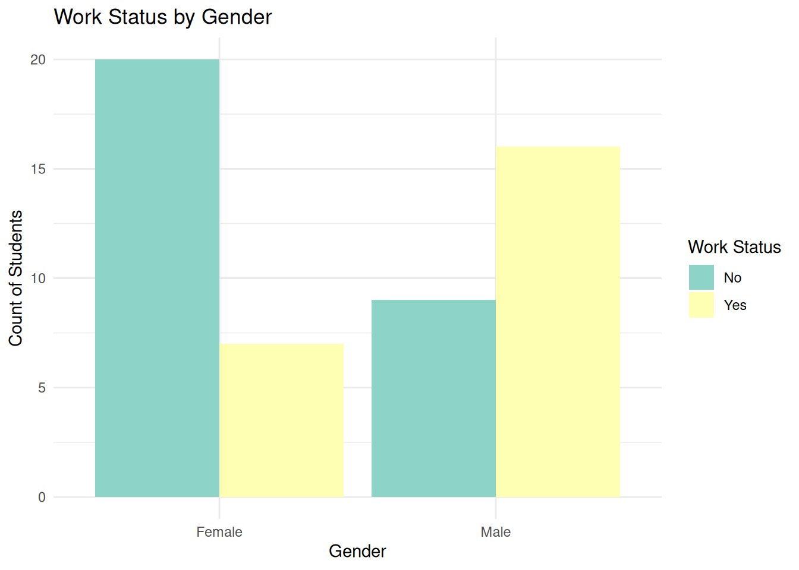

# library(): loads a package so its functions can be used in this session.# read_csv() imports a CSV and infers column types using readr.# Inspect the types and missing values before applying summaries or statistical tests.library (dplyr)
Attaching package: 'dplyr'
The following objects are masked from 'package:stats':
filter, lag
The following objects are masked from 'package:base':
intersect, setdiff, setequal, union
Use: To test if the mean of a single sample is significantly different from a known or hypothesized population mean.
Example: Test if the mean age of BI students = 21
Null Hypothesis: Mean age of BI students = 21
Alternative Hypothesis: Mean age of BI students ≠ 21
# summary(): returns summaries appropriate to the object, such as numeric quartiles or fitted-model results.# print(): displays the supplied value or object.# t.test() calculates a mean-comparison test and a confidence interval.# mu sets a hypothesized mean; a grouping formula compares groups, while paired=TRUE uses paired differences.# Check the data to ensure there are no missing values and age is numericsummary(survey_data$age)
Min. 1st Qu. Median Mean 3rd Qu. Max.
18.00 20.00 21.00 21.56 22.00 27.00
# Perform one-sample t-test t_test_result <-t.test(survey_data$age, mu =21)# Print the t-test resultprint(t_test_result)
One Sample t-test
data: survey_data$age
t = 2.2194, df = 53, p-value = 0.03076
alternative hypothesis: true mean is not equal to 21
95 percent confidence interval:
21.05348 22.05763
sample estimates:
mean of x
21.55556
Interpretation:
The one-sample t-test suggests that the mean age in the data sample (21.56) is statistically significantly different from the hypothesized population mean of 21 years.
The p-value (0.03076) indicates the probability of observing the sample mean (or something more extreme) if the true population mean were actually 21.
Since the p-value (0.03076) is less than 0.05, this indicates that we can reject the null hypothesis that the true mean age is 21 years at the 5% significance level.
The true mean age in the population is likely slightly higher, within the range of 21.05 to 22.06 years.
The 95% confidence interval of 21.05348 to 22.05763 suggests that we are 95% confident that the true mean age lies within this range.
The interval is slightly above 21, which indicates that while 21 is close to the lower bound of this interval, the mean age is likely to be slightly higher than 21.
Visualize the mean students age
# ggplot(): starts a plot from data; additional layers are joined with +.# aes(): maps variables to visual properties such as x, y, fill, color, or group.# labs(): sets axis titles, legend titles, plot titles, and captions.# scale_y_continuous(): controls numeric y-axis breaks, labels, limits, and spacing.# seq(): creates an equally spaced sequence; by sets spacing and length.out sets the number of values.# floor(): rounds downward to the nearest integer.# min(): returns the smallest supplied value.# ceiling(): rounds upward to an integer; sample-size planning must meet the minimum required size.# max(): returns the largest supplied value.# theme_minimal(): uses a minimal chart style; base_size controls the base text size in points.# geom_boxplot() summarizes each numerical distribution with a box, median, whiskers, and flagged points.# This plot uses ggplot2 quartile defaults unless explicit statistics are supplied.ggplot(survey_data, aes(y = age)) +geom_boxplot(fill ="#E69F00", color ="black") +labs(title ="Boxplot of Age Distribution", y ="Age") +scale_y_continuous(breaks =seq(floor(min(survey_data$age, na.rm =TRUE)), ceiling(max(survey_data$age, na.rm =TRUE)), by =0.5)) +theme_minimal()

Extended Plot
# library(): loads a package so its functions can be used in this session.# summarize(): is the alternative spelling of summarise(), reducing each group to summary rows.# min(): returns the smallest supplied value.# quantile(): computes sample percentiles; probs gives probabilities and type selects the interpolation rule.# median(): returns the middle sorted value, averaging the middle pair for even sample sizes.# max(): returns the largest supplied value.# mean(): computes an average; logical TRUE/FALSE values contribute 1/0, giving a proportion.# ggplot(): starts a plot from data; additional layers are joined with +.# aes(): maps variables to visual properties such as x, y, fill, color, or group.# annotate(): adds a fixed plot annotation rather than mapping one label per data row.# paste(): joins text using sep between pieces; collapse combines a vector into one string.# round(): rounds displayed values; digits selects decimal places and does not change statistical uncertainty.# labs(): sets axis titles, legend titles, plot titles, and captions.# scale_y_continuous(): controls numeric y-axis breaks, labels, limits, and spacing.# seq(): creates an equally spaced sequence; by sets spacing and length.out sets the number of values.# floor(): rounds downward to the nearest integer.# ceiling(): rounds upward to an integer; sample-size planning must meet the minimum required size.# theme_minimal(): uses a minimal chart style; base_size controls the base text size in points.# theme(): customizes non-data plot elements such as legends, grids, and axis text.# element_blank(): removes the selected non-data plot element.# geom_boxplot() summarizes each numerical distribution with a box, median, whiskers, and flagged points.# This plot uses ggplot2 quartile defaults unless explicit statistics are supplied.library(ggplot2)library(dplyr)# Calculate summary statisticssummary_stats <- survey_data %>%summarize(Min =min(age, na.rm =TRUE),Q1 =quantile(age, 0.25, na.rm =TRUE),Median =median(age, na.rm =TRUE),Q3 =quantile(age, 0.75, na.rm =TRUE),Max =max(age, na.rm =TRUE),Mean =mean(age, na.rm =TRUE) )# Create the boxplot with summary statistics annotationsggplot(survey_data, aes(y = age, x =1)) +# Use x = 1 to fix the position on the x-axisgeom_boxplot(fill ="#E69F00", color ="black") +annotate("text", x =1, y = summary_stats$Min, label =paste("Min:", round(summary_stats$Min, 2)), vjust =1.5, color ="#2878A5") +annotate("text", x =1, y = summary_stats$Q1, label =paste("Q1:", round(summary_stats$Q1, 2)), vjust =1.5, color ="#2878A5") +annotate("text", x =1, y = summary_stats$Median, label =paste("Median:", round(summary_stats$Median, 2)), vjust =-0.5, color ="#444444") +annotate("text", x =1, y = summary_stats$Q3, label =paste("Q3:", round(summary_stats$Q3, 2)), vjust =-1.5, color ="#2878A5") +annotate("text", x =1, y = summary_stats$Max, label =paste("Max:", round(summary_stats$Max, 2)), vjust =-1.5, color ="#2878A5") +annotate("text", x =1.2, y = summary_stats$Mean, label =paste("Mean:", round(summary_stats$Mean, 2)), vjust =-0.5, hjust =0, color ="#E69F00") +labs(title ="Boxplot of Age Distribution", y ="Age", x =NULL) +scale_y_continuous(breaks =seq(floor(min(survey_data$age, na.rm =TRUE)), ceiling(max(survey_data$age, na.rm =TRUE)), by =0.5)) +theme_minimal() +theme(axis.text.x =element_blank(), axis.ticks.x =element_blank())

2. Two-sample T-test (Independent)
Use: To compare the means of two independent samples to see if they are significantly different.
Example 1: Compare the GPA of BI students by Gender
Null Hypothesis: There is no difference between the mean GPA for male and female BI students
Alternative Hypothesis: There is a difference between the mean GPA for male and female BI students
# print(): displays the supplied value or object.# t.test() calculates a mean-comparison test and a confidence interval.# mu sets a hypothesized mean; a grouping formula compares groups, while paired=TRUE uses paired differences.# Perform a two-sample t-test for GPA between genderst_test_gpa_gender <-t.test(gpa ~ gender, data = survey_data)# Print the resultprint(t_test_gpa_gender)
Welch Two Sample t-test
data: gpa by gender
t = -0.17232, df = 52, p-value = 0.8639
alternative hypothesis: true difference in means between group Female and group Male is not equal to 0
95 percent confidence interval:
-0.2968477 0.2498960
sample estimates:
mean in group Female mean in group Male
2.731724 2.755200
Interpretation:
P-Value: 0.8639
Mean GPA in Group Female: 2.731724
Mean GPA in Group Male: 2.755200
In this case, the p-value is 0.8639, which is much greater than 0.05, indicating that we do not reject the null hypothesis.
This suggests that there is no significant difference in GPA between female and male students.
Visualize GPA by Gender:
To create a boxplot showing the GPA distribution by gender, use the following R code:
# library(): loads a package so its functions can be used in this session.# ggplot(): starts a plot from data; additional layers are joined with +.# aes(): maps variables to visual properties such as x, y, fill, color, or group.# labs(): sets axis titles, legend titles, plot titles, and captions.# scale_y_continuous(): controls numeric y-axis breaks, labels, limits, and spacing.# seq(): creates an equally spaced sequence; by sets spacing and length.out sets the number of values.# floor(): rounds downward to the nearest integer.# min(): returns the smallest supplied value.# ceiling(): rounds upward to an integer; sample-size planning must meet the minimum required size.# max(): returns the largest supplied value.# theme_minimal(): uses a minimal chart style; base_size controls the base text size in points.# geom_boxplot() summarizes each numerical distribution with a box, median, whiskers, and flagged points.# This plot uses ggplot2 quartile defaults unless explicit statistics are supplied.library(ggplot2)# Create a boxplot for GPA distribution by genderggplot(survey_data, aes(x = gender, y = gpa, fill = gender)) +geom_boxplot() +labs(title ="Boxplot of GPA Distribution by Gender", x ="Gender", y ="GPA") +scale_y_continuous(breaks =seq(floor(min(survey_data$gpa, na.rm =TRUE)), ceiling(max(survey_data$gpa, na.rm =TRUE)), by =0.2)) +theme_minimal()

Extended Plot with numbers
# library(): loads a package so its functions can be used in this session.# group_by(): defines groups for subsequent dplyr operations without itself calculating a summary.# summarize(): is the alternative spelling of summarise(), reducing each group to summary rows.# min(): returns the smallest supplied value.# quantile(): computes sample percentiles; probs gives probabilities and type selects the interpolation rule.# median(): returns the middle sorted value, averaging the middle pair for even sample sizes.# max(): returns the largest supplied value.# mean(): computes an average; logical TRUE/FALSE values contribute 1/0, giving a proportion.# ggplot(): starts a plot from data; additional layers are joined with +.# aes(): maps variables to visual properties such as x, y, fill, color, or group.# geom_text(): draws labels from mapped data; position and hjust/vjust control placement.# round(): rounds displayed values; digits selects decimal places and does not change statistical uncertainty.# paste(): joins text using sep between pieces; collapse combines a vector into one string.# labs(): sets axis titles, legend titles, plot titles, and captions.# scale_y_continuous(): controls numeric y-axis breaks, labels, limits, and spacing.# seq(): creates an equally spaced sequence; by sets spacing and length.out sets the number of values.# floor(): rounds downward to the nearest integer.# ceiling(): rounds upward to an integer; sample-size planning must meet the minimum required size.# theme_minimal(): uses a minimal chart style; base_size controls the base text size in points.# geom_boxplot() summarizes each numerical distribution with a box, median, whiskers, and flagged points.# This plot uses ggplot2 quartile defaults unless explicit statistics are supplied.library(ggplot2)library(dplyr)# Calculate summary statisticssummary_stats <- survey_data %>%group_by(gender) %>%summarize(Min =min(gpa, na.rm =TRUE),Q1 =quantile(gpa, 0.25, na.rm =TRUE),Median =median(gpa, na.rm =TRUE),Q3 =quantile(gpa, 0.75, na.rm =TRUE),Max =max(gpa, na.rm =TRUE),Mean =mean(gpa, na.rm =TRUE) )# Create the boxplot with summary statistics annotationsggplot(survey_data, aes(x = gender, y = gpa, fill = gender)) +geom_boxplot() +geom_text(data = summary_stats, aes(x = gender, y = Min, label =round(Min, 2)), vjust =1.5, color ="#2878A5") +geom_text(data = summary_stats, aes(x = gender, y = Q1, label =round(Q1, 2)), vjust =1.5, color ="#2878A5") +geom_text(data = summary_stats, aes(x = gender, y = Median, label =round(Median, 2)), vjust =-0.5, color ="#444444") +geom_text(data = summary_stats, aes(x = gender, y = Q3, label =round(Q3, 2)), vjust =-1.5, color ="#2878A5") +geom_text(data = summary_stats, aes(x = gender, y = Max, label =round(Max, 2)), vjust =-1.5, color ="#2878A5") +geom_text(data = summary_stats, aes(x = gender, y = Mean, label =paste("Mean:", round(Mean, 2))), vjust =-2.5, color ="#E69F00") +labs(title ="Boxplot of GPA Distribution by Gender", x ="Gender", y ="GPA") +scale_y_continuous(breaks =seq(floor(min(survey_data$gpa, na.rm =TRUE)), ceiling(max(survey_data$gpa, na.rm =TRUE)), by =0.2)) +theme_minimal()
Example 2: Test if having a job has influence on Student’s GPA
# print(): displays the supplied value or object.# t.test() calculates a mean-comparison test and a confidence interval.# mu sets a hypothesized mean; a grouping formula compares groups, while paired=TRUE uses paired differences.# Perform a two-sample t-test for GPA between work statust_test_gpa_work <-t.test(gpa ~ does_work, data = survey_data)# Print the resultprint(t_test_gpa_work)
Welch Two Sample t-test
data: gpa by does_work
t = 0.10266, df = 46.32, p-value = 0.9187
alternative hypothesis: true difference in means between group No and group Yes is not equal to 0
95 percent confidence interval:
-0.2671799 0.2959036
sample estimates:
mean in group No mean in group Yes
2.748710 2.734348
Interpretation:
P-Value: 0.9187
Mean GPA in Group No: 2.748710
Mean GPA in Group Yes: 2.734348
In this case, the p-value is 0.9187, which is much greater than 0.05, indicating that we do not reject the null hypothesis.
This suggests that there is no significant difference in GPA between students who do work and those who do not.
Visualize GPA by Work Status:
To create a boxplot showing the GPA distribution by work status, use the following R code:
# library(): loads a package so its functions can be used in this session.# ggplot(): starts a plot from data; additional layers are joined with +.# aes(): maps variables to visual properties such as x, y, fill, color, or group.# labs(): sets axis titles, legend titles, plot titles, and captions.# scale_y_continuous(): controls numeric y-axis breaks, labels, limits, and spacing.# seq(): creates an equally spaced sequence; by sets spacing and length.out sets the number of values.# floor(): rounds downward to the nearest integer.# min(): returns the smallest supplied value.# ceiling(): rounds upward to an integer; sample-size planning must meet the minimum required size.# max(): returns the largest supplied value.# theme_minimal(): uses a minimal chart style; base_size controls the base text size in points.# geom_boxplot() summarizes each numerical distribution with a box, median, whiskers, and flagged points.# This plot uses ggplot2 quartile defaults unless explicit statistics are supplied.library(ggplot2)# Create a boxplot for GPA distribution by work statusggplot(survey_data, aes(x = does_work, y = gpa, fill = does_work)) +geom_boxplot() +labs(title ="Boxplot of GPA Distribution by Work Status", x ="Work Status", y ="GPA") +scale_y_continuous(breaks =seq(floor(min(survey_data$gpa, na.rm =TRUE)), ceiling(max(survey_data$gpa, na.rm =TRUE)), by =0.2)) +theme_minimal()
Extended Plot
# library(): loads a package so its functions can be used in this session.# group_by(): defines groups for subsequent dplyr operations without itself calculating a summary.# summarize(): is the alternative spelling of summarise(), reducing each group to summary rows.# min(): returns the smallest supplied value.# quantile(): computes sample percentiles; probs gives probabilities and type selects the interpolation rule.# median(): returns the middle sorted value, averaging the middle pair for even sample sizes.# max(): returns the largest supplied value.# mean(): computes an average; logical TRUE/FALSE values contribute 1/0, giving a proportion.# ggplot(): starts a plot from data; additional layers are joined with +.# aes(): maps variables to visual properties such as x, y, fill, color, or group.# geom_text(): draws labels from mapped data; position and hjust/vjust control placement.# round(): rounds displayed values; digits selects decimal places and does not change statistical uncertainty.# paste(): joins text using sep between pieces; collapse combines a vector into one string.# labs(): sets axis titles, legend titles, plot titles, and captions.# scale_y_continuous(): controls numeric y-axis breaks, labels, limits, and spacing.# seq(): creates an equally spaced sequence; by sets spacing and length.out sets the number of values.# floor(): rounds downward to the nearest integer.# ceiling(): rounds upward to an integer; sample-size planning must meet the minimum required size.# theme_minimal(): uses a minimal chart style; base_size controls the base text size in points.# geom_boxplot() summarizes each numerical distribution with a box, median, whiskers, and flagged points.# This plot uses ggplot2 quartile defaults unless explicit statistics are supplied.library(ggplot2)library(dplyr)# Calculate summary statisticssummary_stats <- survey_data %>%group_by(does_work) %>%summarize(Min =min(gpa, na.rm =TRUE),Q1 =quantile(gpa, 0.25, na.rm =TRUE),Median =median(gpa, na.rm =TRUE),Q3 =quantile(gpa, 0.75, na.rm =TRUE),Max =max(gpa, na.rm =TRUE),Mean =mean(gpa, na.rm =TRUE) )# Create the boxplot with summary statistics annotationsggplot(survey_data, aes(x = does_work, y = gpa, fill = does_work)) +geom_boxplot() +geom_text(data = summary_stats, aes(x = does_work, y = Min, label =round(Min, 2)), vjust =1.5, color ="#2878A5") +geom_text(data = summary_stats, aes(x = does_work, y = Q1, label =round(Q1, 2)), vjust =1.5, color ="#2878A5") +geom_text(data = summary_stats, aes(x = does_work, y = Median, label =round(Median, 2)), vjust =-0.5, color ="#444444") +geom_text(data = summary_stats, aes(x = does_work, y = Q3, label =round(Q3, 2)), vjust =-1.5, color ="#2878A5") +geom_text(data = summary_stats, aes(x = does_work, y = Max, label =round(Max, 2)), vjust =-1.5, color ="#2878A5") +geom_text(data = summary_stats, aes(x = does_work, y = Mean, label =paste("Mean:", round(Mean, 2))), vjust =-2.5, color ="#E69F00") +labs(title ="Boxplot of GPA Distribution by Work Status", x ="Work Status", y ="GPA") +scale_y_continuous(breaks =seq(floor(min(survey_data$gpa, na.rm =TRUE)), ceiling(max(survey_data$gpa, na.rm =TRUE)), by =0.2)) +theme_minimal()

Example 3: Compare the GPA of Adabi Tawjihi Branch and Scientifc Tawjihi Branch
# filter(): keeps rows whose logical conditions are TRUE; missing conditions are not retained.# c(): combines values into a vector, converting them to a common type when needed.# print(): displays the supplied value or object.# t.test() calculates a mean-comparison test and a confidence interval.# mu sets a hypothesized mean; a grouping formula compares groups, while paired=TRUE uses paired differences.# Filter the data for the two branchesfiltered_data <- survey_data %>%filter(national_high_school_category %in%c("adabi", "scientific"))# Perform a two-sample t-test for GPA between Adabi branch and Scientific brancht_test_result <-t.test(gpa ~ national_high_school_category, data = filtered_data)# Print the resultprint(t_test_result)
Welch Two Sample t-test
data: gpa by national_high_school_category
t = -0.8071, df = 34.662, p-value = 0.4251
alternative hypothesis: true difference in means between group adabi and group scientific is not equal to 0
95 percent confidence interval:
-0.4019184 0.1733073
sample estimates:
mean in group adabi mean in group scientific
2.699444 2.813750
Interpretation:
P-Value: 0.4251
Mean GPA in Group Adabi: 2.699444
Mean GPA in Group Scientific: 2.813750
In this case, the p-value is 0.4251, which is greater than 0.05, indicating that we do not reject the null hypothesis.
This suggests that there is no significant difference in GPA between students from the Adabi and Scientific high school categories.
Visualize GPA by High School Category:
# library(): loads a package so its functions can be used in this session.# ggplot(): starts a plot from data; additional layers are joined with +.# aes(): maps variables to visual properties such as x, y, fill, color, or group.# labs(): sets axis titles, legend titles, plot titles, and captions.# scale_y_continuous(): controls numeric y-axis breaks, labels, limits, and spacing.# seq(): creates an equally spaced sequence; by sets spacing and length.out sets the number of values.# floor(): rounds downward to the nearest integer.# min(): returns the smallest supplied value.# ceiling(): rounds upward to an integer; sample-size planning must meet the minimum required size.# max(): returns the largest supplied value.# theme_minimal(): uses a minimal chart style; base_size controls the base text size in points.# geom_boxplot() summarizes each numerical distribution with a box, median, whiskers, and flagged points.# This plot uses ggplot2 quartile defaults unless explicit statistics are supplied.library(ggplot2)# Create a boxplot for GPA distribution by high school categoryggplot(survey_data, aes(x = national_high_school_category, y = gpa, fill = national_high_school_category)) +geom_boxplot() +labs(title ="Boxplot of GPA Distribution by High School Category", x ="High School Category", y ="GPA") +scale_y_continuous(breaks =seq(floor(min(survey_data$gpa, na.rm =TRUE)), ceiling(max(survey_data$gpa, na.rm =TRUE)), by =0.2)) +theme_minimal()

Extended Plot
# library(): loads a package so its functions can be used in this session.# group_by(): defines groups for subsequent dplyr operations without itself calculating a summary.# summarize(): is the alternative spelling of summarise(), reducing each group to summary rows.# min(): returns the smallest supplied value.# quantile(): computes sample percentiles; probs gives probabilities and type selects the interpolation rule.# median(): returns the middle sorted value, averaging the middle pair for even sample sizes.# max(): returns the largest supplied value.# mean(): computes an average; logical TRUE/FALSE values contribute 1/0, giving a proportion.# ggplot(): starts a plot from data; additional layers are joined with +.# aes(): maps variables to visual properties such as x, y, fill, color, or group.# geom_text(): draws labels from mapped data; position and hjust/vjust control placement.# paste(): joins text using sep between pieces; collapse combines a vector into one string.# round(): rounds displayed values; digits selects decimal places and does not change statistical uncertainty.# labs(): sets axis titles, legend titles, plot titles, and captions.# scale_y_continuous(): controls numeric y-axis breaks, labels, limits, and spacing.# seq(): creates an equally spaced sequence; by sets spacing and length.out sets the number of values.# floor(): rounds downward to the nearest integer.# ceiling(): rounds upward to an integer; sample-size planning must meet the minimum required size.# theme_minimal(): uses a minimal chart style; base_size controls the base text size in points.# geom_boxplot() summarizes each numerical distribution with a box, median, whiskers, and flagged points.# This plot uses ggplot2 quartile defaults unless explicit statistics are supplied.library(ggplot2)library(dplyr)# Calculate summary statistics for each high school categorysummary_stats <- survey_data %>%group_by(national_high_school_category) %>%summarize(Min =min(gpa, na.rm =TRUE),Q1 =quantile(gpa, 0.25, na.rm =TRUE),Median =median(gpa, na.rm =TRUE),Q3 =quantile(gpa, 0.75, na.rm =TRUE),Max =max(gpa, na.rm =TRUE),Mean =mean(gpa, na.rm =TRUE) )# Create the boxplot with summary statistics annotationsggplot(survey_data, aes(x = national_high_school_category, y = gpa, fill = national_high_school_category)) +geom_boxplot() +geom_text(data = summary_stats, aes(x = national_high_school_category, y = Min, label =paste("Min:", round(Min, 2))), vjust =1.5, color ="#2878A5") +geom_text(data = summary_stats, aes(x = national_high_school_category, y = Q1, label =paste("Q1:", round(Q1, 2))), vjust =1.5, color ="#2878A5") +geom_text(data = summary_stats, aes(x = national_high_school_category, y = Median, label =paste("Median:", round(Median, 2))), vjust =-0.5, color ="#444444") +geom_text(data = summary_stats, aes(x = national_high_school_category, y = Q3, label =paste("Q3:", round(Q3, 2))), vjust =-1.5, color ="#2878A5") +geom_text(data = summary_stats, aes(x = national_high_school_category, y = Max, label =paste("Max:", round(Max, 2))), vjust =-1.5, color ="#2878A5") +geom_text(data = summary_stats, aes(x = national_high_school_category, y = Mean, label =paste("Mean:", round(Mean, 2))), vjust =-2.5, color ="#E69F00") +labs(title ="Boxplot of GPA Distribution by High School Category", x ="High School Category", y ="GPA") +scale_y_continuous(breaks =seq(floor(min(survey_data$gpa, na.rm =TRUE)), ceiling(max(survey_data$gpa, na.rm =TRUE)), by =0.2)) +theme_minimal()

3. Paired Sample T-test
Use: To compare the means of two related samples (e.g., before and after measurements on the same subjects).
Example:- Suppose we want to test if a training program has significantly improved employee productivity scores by comparing their productivity before and after the training.
Code:
# set.seed(): fixes the pseudorandom sequence so rerunning the same code reproduces its artificial draws.# rnorm(): generates artificial normal draws; n is the draw count and sd is standard deviation.# print(): displays the supplied value or object.# t.test() calculates a mean-comparison test and a confidence interval.# mu sets a hypothesized mean; a grouping formula compares groups, while paired=TRUE uses paired differences.# Set seed for reproducibilityset.seed(123)# Generate productivity scores before and after the trainingproductivity_before <-rnorm(30, mean =5, sd =2) # Productivity scores before trainingproductivity_after <- productivity_before +rnorm(30, mean =0.5, sd =1) # Productivity scores after training# Perform paired sample t-test to compare the mean productivity scores before and after trainingt_test_result <-t.test(productivity_before, productivity_after, paired =TRUE)# Print the t-test resultprint(t_test_result)
Paired t-test
data: productivity_before and productivity_after
t = -4.4489, df = 29, p-value = 0.0001169
alternative hypothesis: true mean difference is not equal to 0
95 percent confidence interval:
-0.9901802 -0.3664964
sample estimates:
mean difference
-0.6783383
Interpretation:
Productivity Scores:
Before Training: Generated productivity scores with a mean of approximately 5.
After Training: Generated productivity scores that are on average higher than before training.
p-value: Probability of observing the data if the null hypothesis is true (0.0001169)
Conclusion: Since the p-value (0.0001169) is less than the common significance level (0.05), we reject the null hypothesis.
This indicates that there is a significant difference in productivity scores before and after the training, with productivity increasing after the training program.
4. One-way ANOVA
Use: To compare the means of three or more groups to see if at least one mean is different.
Example 1:-Test if there is a difference in student GPA according to study hours
To perform an ANOVA test to compare the effect of study hours on GPA, we first need to ensure that the study hours are categorized (e.g., “less than 1 hour,” “1-3 hours,” etc.) into factors. Then, wecan use the aov function to perform the ANOVA test in R.
R Code for ANOVA Test Comparing Study Hours with GPA
# mutate(): creates or replaces columns while retaining the original rows.# factor(): stores categorical values; levels fixes their permitted order and labels can rename their display.# c(): combines values into a vector, converting them to a common type when needed.# filter(): keeps rows whose logical conditions are TRUE; missing conditions are not retained.# print(): displays the supplied value or object.# aov() fits the ANOVA model specified by the response ~ group formula.# summary() reports its ANOVA table; interpretation also requires checking the model assumptions.# Convert the columns to ordered factorssurvey_data <- survey_data %>%mutate(study_hours =factor(study_hours, levels =c("< 1", "1-3", "3-5", "> 5"), ordered =TRUE))survey_data <- survey_data %>%filter(study_hours !="> 5")# View(survey_data)# Perform ANOVA testanova_result <-aov(gpa ~ study_hours, data = survey_data)# Print the summary of the ANOVA testprint(summary(anova_result))
Df Sum Sq Mean Sq F value Pr(>F)
study_hours 2 0.099 0.04936 0.185 0.832
Residuals 49 13.072 0.26677
Explanation:
F-statistic (0.185): The F-statistic is quite low, indicating that the variance between the groups (different study hour categories) is much smaller than the variance within the groups.
P-value (0.832): The p-value is 0.832, which is much greater than the common significance level of 0.05. This suggests that there is no statistically significant difference in GPA across the different study hour categories.
Possible Reasons for No Significant Effect:
Sample Size:
The sample sizes, especially for the “More than 5 Hours” category, are small. Small sample sizes can lead to less reliable statistical results.
Other Influencing Factors:
GPA may be influenced by many other factors beyond just study hours, such as the effectiveness of study methods, prior knowledge, teaching quality, etc.
Homogeneity of Study Habits:
There might be homogeneity in the study habits of students in this dataset, meaning most students have similar study patterns, leading to similar GPAs.
Measurement of Study Hours:
The accuracy of self-reported study hours can be variable. Students may not accurately report their study hours, leading to less precise groupings.
Visualize GPA by Study Hours
# library(): loads a package so its functions can be used in this session.# group_by(): defines groups for subsequent dplyr operations without itself calculating a summary.# summarise(): reduces each group to summary rows; .groups="drop" removes grouping from the result.# n(): counts rows in the current dplyr group.# ggplot(): starts a plot from data; additional layers are joined with +.# aes(): maps variables to visual properties such as x, y, fill, color, or group.# ggtitle(): sets the plot title.# xlab(): sets the x-axis title.# ylab(): sets the y-axis title.# scale_y_continuous(): controls numeric y-axis breaks, labels, limits, and spacing.# seq(): creates an equally spaced sequence; by sets spacing and length.out sets the number of values.# scale_fill_brewer(): uses a named ColorBrewer palette for categorical fills.# theme_minimal(): uses a minimal chart style; base_size controls the base text size in points.# geom_text(): draws labels from mapped data; position and hjust/vjust control placement.# paste0(): joins text with no separator; collapse can combine a vector into one string.# position_dodge(): places groups side by side; width controls their horizontal separation.# geom_boxplot() summarizes each numerical distribution with a box, median, whiskers, and flagged points.# This plot uses ggplot2 quartile defaults unless explicit statistics are supplied.# Load necessary library for visualizationlibrary(ggplot2)# Calculate the sample size for each categorysample_sizes <- survey_data %>%group_by(study_hours) %>%summarise(count =n())# Create boxplot to visualize the relationship between study hours and GPAggplot(survey_data, aes(x = study_hours, y = gpa, fill=study_hours)) +geom_boxplot() +ggtitle("Boxplot of GPA by Study Hours") +xlab("Study Hours") +ylab("GPA") +scale_y_continuous(breaks =seq(1, 4, by =0.2)) +scale_fill_brewer(palette ="Set3") +theme_minimal() +geom_text(data = sample_sizes, aes(x = study_hours, y =4, label =paste0("sample size=", count)), position =position_dodge(width =0.75), vjust =1, size =3)

sample_sizes <- survey_data %>% group_by(study_hours) %>% summarise(count = n()) calculates the sample size for each study_hours category.
geom_text() adds the sample size labels to the plot. The labels are positioned just above the top of the plot (y = 4) and are adjusted to avoid overlap using position_dodge and vjust.
Extended Plot
# library(): loads a package so its functions can be used in this session.# group_by(): defines groups for subsequent dplyr operations without itself calculating a summary.# summarize(): is the alternative spelling of summarise(), reducing each group to summary rows.# min(): returns the smallest supplied value.# quantile(): computes sample percentiles; probs gives probabilities and type selects the interpolation rule.# median(): returns the middle sorted value, averaging the middle pair for even sample sizes.# max(): returns the largest supplied value.# mean(): computes an average; logical TRUE/FALSE values contribute 1/0, giving a proportion.# n(): counts rows in the current dplyr group.# ggplot(): starts a plot from data; additional layers are joined with +.# aes(): maps variables to visual properties such as x, y, fill, color, or group.# ggtitle(): sets the plot title.# xlab(): sets the x-axis title.# ylab(): sets the y-axis title.# scale_y_continuous(): controls numeric y-axis breaks, labels, limits, and spacing.# seq(): creates an equally spaced sequence; by sets spacing and length.out sets the number of values.# scale_fill_brewer(): uses a named ColorBrewer palette for categorical fills.# theme_minimal(): uses a minimal chart style; base_size controls the base text size in points.# geom_text(): draws labels from mapped data; position and hjust/vjust control placement.# paste(): joins text using sep between pieces; collapse combines a vector into one string.# round(): rounds displayed values; digits selects decimal places and does not change statistical uncertainty.# paste0(): joins text with no separator; collapse can combine a vector into one string.# geom_boxplot() summarizes each numerical distribution with a box, median, whiskers, and flagged points.# This plot uses ggplot2 quartile defaults unless explicit statistics are supplied.library(ggplot2)library(dplyr)# Calculate the five-number summary and mean for each categorysummary_stats <- survey_data %>%group_by(study_hours) %>%summarize(Min =min(gpa, na.rm =TRUE),Q1 =quantile(gpa, 0.25, na.rm =TRUE),Median =median(gpa, na.rm =TRUE),Q3 =quantile(gpa, 0.75, na.rm =TRUE),Max =max(gpa, na.rm =TRUE),Mean =mean(gpa, na.rm =TRUE),count =n() )# Create the boxplot with annotations for the five-number summary and meanggplot(survey_data, aes(x = study_hours, y = gpa, fill = study_hours)) +geom_boxplot() +ggtitle("Boxplot of GPA by Study Hours") +xlab("Study Hours") +ylab("GPA") +scale_y_continuous(breaks =seq(1, 4, by =0.2)) +scale_fill_brewer(palette ="Set3") +theme_minimal() +geom_text(data = summary_stats, aes(x = study_hours, y = Min, label =paste("Min:", round(Min, 2))), vjust =1.5, color ="#2878A5", size =3) +geom_text(data = summary_stats, aes(x = study_hours, y = Q1, label =paste("Q1:", round(Q1, 2))), vjust =1.5, color ="#2878A5", size =3) +geom_text(data = summary_stats, aes(x = study_hours, y = Median, label =paste("Median:", round(Median, 2))), vjust =-0.5, color ="#444444", size =3) +geom_text(data = summary_stats, aes(x = study_hours, y = Q3, label =paste("Q3:", round(Q3, 2))), vjust =-1.5, color ="#2878A5", size =3) +geom_text(data = summary_stats, aes(x = study_hours, y = Max, label =paste("Max:", round(Max, 2))), vjust =-1.5, color ="#2878A5", size =3) +geom_text(data = summary_stats, aes(x = study_hours, y = Mean, label =paste("Mean:", round(Mean, 2))), vjust =-2.5, color ="#E69F00", size =3) +geom_text(data = summary_stats, aes(x = study_hours, y =4, label =paste0("Sample size: ", count)), vjust =1, size =3, color ="black")

Example 2:- Test if there is a difference in student GPA according to the high school certificate category (National, SAT/ACT, IG, IB)
# as.factor(): converts values to categories; use factor(...,levels=...) when a specific order matters.# aov() fits the ANOVA model specified by the response ~ group formula.# summary() reports its ANOVA table; interpretation also requires checking the model assumptions.# Convert high_school_category to a factor if it is not alreadysurvey_data$high_school_category <-as.factor(survey_data$high_school_category)# Perform ANOVA to test the relationship between high school category and GPAanova_result <-aov(gpa ~ high_school_category, data = survey_data)# Print the summary of the ANOVA testsummary(anova_result)
Df Sum Sq Mean Sq F value Pr(>F)
high_school_category 3 0.282 0.09396 0.35 0.789
Residuals 48 12.888 0.26851
Interpretation of ANOVA Results
The ANOVA table helps determine if there is a significant relationship between the high_school_category and GPA. Here are the results:
Explanation:
p-value (Pr(>F)):
Since the p-value (0.778) is much greater than the common significance level of 0.05, we fail to reject the null hypothesis.
This suggests that there is no statistically significant difference in GPA between the different high school categories.
In other words, the high school category does not appear to have a significant impact on GPA in this dataset.
Visualization:
To complement the statistical results, you can create a box plot to visualize the GPA distribution across different high school categories:
# group_by(): defines groups for subsequent dplyr operations without itself calculating a summary.# summarise(): reduces each group to summary rows; .groups="drop" removes grouping from the result.# n(): counts rows in the current dplyr group.# ggplot(): starts a plot from data; additional layers are joined with +.# aes(): maps variables to visual properties such as x, y, fill, color, or group.# ggtitle(): sets the plot title.# xlab(): sets the x-axis title.# ylab(): sets the y-axis title.# scale_y_continuous(): controls numeric y-axis breaks, labels, limits, and spacing.# seq(): creates an equally spaced sequence; by sets spacing and length.out sets the number of values.# scale_fill_brewer(): uses a named ColorBrewer palette for categorical fills.# theme_minimal(): uses a minimal chart style; base_size controls the base text size in points.# geom_text(): draws labels from mapped data; position and hjust/vjust control placement.# paste0(): joins text with no separator; collapse can combine a vector into one string.# position_dodge(): places groups side by side; width controls their horizontal separation.# geom_boxplot() summarizes each numerical distribution with a box, median, whiskers, and flagged points.# This plot uses ggplot2 quartile defaults unless explicit statistics are supplied.# Calculate the sample size for each categorysample_sizes <- survey_data %>%group_by(high_school_category) %>%summarise(count =n())# Create a box plot to visualize the relationship between high school category and GPAggplot(survey_data, aes(x = high_school_category, y = gpa, fill = high_school_category)) +geom_boxplot() +ggtitle("GPA Distribution by High School Category") +xlab("High School Category") +ylab("GPA") +scale_y_continuous(breaks =seq(1, 4, by =0.2)) +scale_fill_brewer(palette ="Set3") +theme_minimal() +geom_text(data = sample_sizes, aes(x = high_school_category, y =4, label =paste0("sample size=", count)), position =position_dodge(width =0.75), vjust =1, size =3)

The ANOVA test evaluates whether there are statistically significant differences between the means of three or more independent groups.
Here are a few reasons why the ANOVA test might fail to reject the null hypothesis (which states that there are no significant differences between group means) despite apparent differences in the boxplot:
Sample Size: Small sample sizes can lead to higher variability and less statistical power, making it harder to detect significant differences. In the plot, it is evident that some categories have very small sample sizes (e.g., sample sizes of 1, 3, and 5), which could affect the ANOVA test results.
Variance Within Groups: If the variability within each group is high, it can overshadow the differences between group means. In other words, if the data points within each group are widely spread out, the ANOVA might not find the differences between group means significant.
Outliers: The presence of outliers can affect the mean and variance within groups. In the boxplot, there appears to be an outlier in the “Jordanian Tawjihi” category. Outliers can influence the results of statistical tests, making it more difficult to detect significant differences.
Overlapping Confidence Intervals: If the confidence intervals of the group means overlap significantly, it indicates that the means are not statistically different. The boxplot provides a visual indication of the spread and overlap of data points within each group.
Effect Size: The differences between group means might be too small (i.e., small effect size) to be detected as significant by the ANOVA test. Even if there are visible differences in the boxplot, they might not be large enough to be considered statistically significant.
To better understand the results, it might be useful to:
- Check the actual p-value obtained from the ANOVA test.
- Perform post-hoc tests to explore pairwise comparisons between groups if the overall ANOVA is significant.
- Consider the assumptions of the ANOVA test, such as homogeneity of variances and normality of the data, and whether these assumptions are met.
5. Chi-square Test for Independence
Use: To test if there is a significant association between two categorical variables.
Example:- Suppose we want to test if there is a significant association between the gender of BI student and the Working Status
Code:
# table(): counts observations for each category or combination of categories.# print(): displays the supplied value or object.# chisq.test() compares observed table counts with counts expected under independence.# Inspect expected counts and the sampling design before interpreting its p-value.# Create a contingency table for gender and work statuscontingency_table <-table(survey_data$gender, survey_data$does_work)# Print the contingency tableprint(contingency_table)
No Yes
Female 20 7
Male 9 16
# Perform the Chi-Square test of independencechi_square_test <-chisq.test(contingency_table)# Print the resultprint(chi_square_test)
Pearson's Chi-squared test with Yates' continuity correction
data: contingency_table
X-squared = 6.1631, df = 1, p-value = 0.01304
Interpretation of the Results:
The Chi-Square test of independence is used to determine whether there is a significant association between two categorical variables—in this case, gender and work status.
The test compares the observed frequencies in the contingency table to the expected frequencies (the frequencies we would expect if there were no association between the variables).
p-value (0.01304):
Since the p-value is less than the common significance level of 0.05, you can reject the null hypothesis.
The null hypothesis in this context is that gender and work status are independent (i.e., there is no association between them).
Because the p-value is low, there is evidence to suggest that there is a statistically significant association between gender and work status in your data.
Visualization (Optional):
We can also create a bar plot to visualize the relationship between gender and work status:
# ggplot(): starts a plot from data; additional layers are joined with +.# aes(): maps variables to visual properties such as x, y, fill, color, or group.# ggtitle(): sets the plot title.# xlab(): sets the x-axis title.# ylab(): sets the y-axis title.# scale_fill_brewer(): uses a named ColorBrewer palette for categorical fills.# theme_minimal(): uses a minimal chart style; base_size controls the base text size in points.# geom_bar() counts raw observations within each x category by default.# A fill mapping subdivides the counts; position="dodge" places subgroup bars side by side.# Create a bar plot to visualize the relationship between gender and work statusggplot(survey_data, aes(x = gender, fill = does_work)) +geom_bar(position ="dodge") +ggtitle("Work Status by Gender") +xlab("Gender") +ylab("Count of Students") +scale_fill_brewer(palette ="Set3", name ="Work Status") +theme_minimal()

This plot will help visualize the counts of students by gender and work status, providing a clear picture of the relationship between these two variables.
Business-Related Examples in Hypothesis Testing
Product Quality Control:
Scenario: A manufacturing company wants to determine if the defect rate of a new production line is significantly different from the established standard.
Test Procedure:
Collect a random sample of 500 products from the new production line.
Record the number of defective products in the sample.
Perform a one-sample proportion test to compare the observed defect rate in the sample against the standard defect rate (e.g., 2%).
If the p-value is below the chosen significance level (e.g., 0.05), conclude that the defect rate is significantly different from the standard.
Marketing Campaign Effectiveness:
Scenario: A company launches a new marketing campaign and wants to determine if it significantly increases sales compared to the previous campaign.
Test Procedure:
Collect daily sales data for 30 days before and 30 days after the campaign launch.
Perform a paired t-test or a two-sample t-test to compare the mean sales figures before and after the campaign.
If the p-value is below the significance level, conclude that the campaign has had a significant impact on sales.
Customer Satisfaction:
Scenario: A service provider wants to assess whether recent changes in customer service procedures have led to an improvement in customer satisfaction scores.
Test Procedure:
Administer customer satisfaction surveys to 100 customers before the changes and 100 customers after the changes.
Ensure that the samples are randomly selected and comparable.
Conduct a two-sample t-test to compare the average satisfaction scores before and after the changes.
A low p-value would indicate a significant improvement in customer satisfaction.
Employee Performance Evaluation:
Scenario: A company introduces a new training program and wants to determine if it significantly improves employee performance.
Test Procedure:
Collect performance scores from 50 employees before and after the training program.
Perform a paired t-test on the before-and-after scores to see if there is a significant improvement in performance.
If the p-value is low, conclude that the training program has improved employee performance.
Price Elasticity Testing:
Scenario: A retailer wants to determine if lowering prices on a specific product category significantly increases sales volume.
Test Procedure:
Collect sales data for two weeks at a higher price and two weeks at a lower price.
Record the sales volume for each period.
Perform a two-sample t-test to compare the average sales volumes between the high-price and low-price periods.
A significant p-value would suggest that lowering prices effectively increases sales.
Real-Life Examples:
Healthcare:
Scenario: A medical researcher wants to determine if a new drug is more effective than the existing treatment for a particular condition.
Test Procedure:
Conduct a clinical trial where patients are randomly assigned to two groups: one receiving the new drug and the other receiving the standard treatment.
After the treatment period, measure the recovery rates in both groups.
Perform a two-sample proportion test or a chi-square test to compare the effectiveness of the treatments.
A significant p-value would indicate that the new drug is more effective.
Public Policy:
Scenario: A government wants to assess whether a new educational policy has led to an improvement in student test scores across the country.
Test Procedure:
Collect test scores from a random sample of 200 students before and after the policy implementation.
Use a paired t-test if the same students are sampled before and after the policy, or a two-sample t-test for independent samples.
Compare the mean test scores to assess the policy’s impact.
A low p-value would indicate that the policy has significantly improved student performance.
Environmental Impact:
Scenario: An environmental scientist wants to determine if a new regulation has led to a significant reduction in pollution levels in a river.
Test Procedure:
Collect water quality data from 10 locations along the river every month for a year, both before and after the regulation.
Conduct a paired t-test to compare pollution levels before and after the regulation.
A significant p-value would suggest that the regulation has effectively reduced pollution.
Consumer Behavior:
Scenario: A grocery store wants to determine if placing organic products at eye level increases the likelihood of purchase compared to when they are placed on lower shelves.
Test Procedure:
Rotate the placement of organic products weekly between different shelf levels (eye level, middle, and lower shelves).
Record the sales data for each placement over several weeks.
Perform a one-way ANOVA or a t-test to compare the sales across the different placements.
A significant p-value would indicate that shelf placement influences purchase behavior.
Educational Interventions:
Scenario: An educator wants to test whether a new teaching method improves students’ performance in math compared to the traditional method.
Test Procedure:
Randomly assign students to two groups: one taught with the new method and the other with the traditional method.
Collect their test scores after the course.
Conduct a two-sample t-test to compare the mean scores between the two groups.
A significant p-value would indicate that the new teaching method is more effective.
Public Health:
Scenario: A public health official wants to determine if a smoking cessation program significantly reduces smoking rates in the community.
Test Procedure:
Conduct surveys before and after the program, asking 200 participants if they are still smoking.
Use a McNemar’s test or a paired proportion test to compare smoking rates before and after the program.
A significant p-value would suggest that the program is effective in reducing smoking.
Additional Context-Specific Examples:
Election Polling:
Scenario: A political analyst wants to determine if a candidate’s support has significantly increased after a televised debate.
Test Procedure:
Conduct polls before and after the debate, randomly sampling 500 voters each time.
Perform a two-sample proportion test to compare the candidate’s support levels before and after the debate.
A significant p-value would indicate a meaningful change in voter support.
Supply Chain Management:
Scenario: A company wants to test if a new supplier delivers goods on time more frequently than the current supplier.
Test Procedure:
Collect delivery data for 100 shipments from each supplier over several months.
Record whether each shipment was delivered on time.
Perform a two-sample proportion test to compare the on-time delivery rates between the two suppliers.
A low p-value would indicate that the new supplier is more reliable in delivering goods on time.
The Experimental Design
Experimental design is the process of planning an experiment to ensure that the data collected can provide valid, reliable, and unbiased answers to the research question. It involves several key elements:
1. Defining the Research Question:
Objective: Clearly state what you want to investigate, including the variables involved and the expected relationships between them.
2. Identifying Variables:
Independent Variable (IV): The factor you manipulate or change (e.g., a new drug, teaching method).
Dependent Variable (DV): The outcome you measure (e.g., recovery rate, test scores).
Control Variables: Other variables that might influence the DV and need to be kept constant.
3. Randomization:
Purpose: Randomly assign participants or samples to different groups (e.g., treatment vs. control) to ensure that groups are comparable, minimizing bias and confounding factors.
4. Control Group:
Purpose: A group that does not receive the treatment or intervention, serving as a baseline to compare the effects of the independent variable.
5. Blinding:
Single-Blind: Participants do not know which group they are in, reducing bias in their responses.
Double-Blind: Neither participants nor researchers know who is in which group, reducing bias in administering the treatment and evaluating outcomes.
6. Replication:
Purpose: Repeating the experiment multiple times or with larger sample sizes to ensure that the results are consistent and not due to chance.
7. Random Sampling:
Purpose: Selecting a representative sample from the population to generalize the findings to the broader group.
8. Data Collection and Analysis:
Procedure: Collect data systematically and use appropriate statistical methods to analyze the data and test the hypotheses.
Summary:
Experimental design is all about carefully planning how to conduct an experiment so that the results are valid, reliable, and can be confidently used to draw conclusions. It involves controlling for external factors through randomization, using control groups, and ensuring that the experiment is conducted systematically.
Controlling for External Factors
External factors, also known as confounding variables, are elements outside of the independent variable that can influence the dependent variable in an experiment or study. These factors can include:
Participant Characteristics:
Age
Gender
Socioeconomic status
Environmental Conditions:
Time of day
Weather
Location of the study
Other Interventions:
Availability of additional resources (e.g., tutoring in educational studies)
Concurrent treatments (e.g., other medications in clinical trials)
Variations in instruction methods or teaching styles
Example 1: In an educational study, external factors might include:
Prior knowledge of students
Differences in teaching styles among instructors
Availability of extra tutoring resources
Example 2: In a clinical trial for a new medication, external factors could involve:
Patients’ pre-existing health conditions
Variations in diet
Adherence to other medications
If not properly controlled, these external factors can introduce bias, making it difficult to determine whether changes in the dependent variable are truly due to the independent variable or are simply the result of these uncontrolled influences.
The process of controlling for external factors primarily involves how we design our experiments or studies, particularly through random sampling and random assignment. Here’s how these aspects work in conjunction with hypothesis testing:
Random Sampling:
Purpose: Random sampling helps ensure that the sample is representative of the population, reducing bias. This process minimizes the influence of confounding variables because each member of the population has an equal chance of being included in the sample.
Impact on Hypothesis Testing: By using a representative sample, the results of the hypothesis test are more likely to generalize to the broader population, making the conclusions drawn from the test more reliable.
Random Assignment:
Purpose: In experiments, randomly assigning participants to different groups (e.g., treatment vs. control) helps ensure that the groups are comparable in terms of both known and unknown factors. This randomization reduces the likelihood that external factors will systematically differ between groups, isolating the effect of the independent variable.
Impact on Hypothesis Testing: Random assignment allows for a more accurate assessment of the effect of the treatment or intervention by minimizing the influence of external factors. The results of the hypothesis test can then more confidently attribute any observed differences to the treatment or intervention rather than to external factors.
Hypothesis Testing:
Role: While random sampling and random assignment help control for external factors, hypothesis testing plays a different role. It provides a statistical framework for evaluating whether the observed differences or effects in your sample are likely due to the treatment/intervention or simply due to random chance.
Example: After you’ve controlled for external factors through randomization, hypothesis testing allows you to assess whether the difference in outcomes between groups is statistically significant. It quantifies the probability that the observed effect could have occurred by chance, given the null hypothesis.
Summary:
Controlling External Factors: This is primarily achieved through experimental design elements like random sampling and random assignment. These processes reduce bias and help ensure that external factors don’t confound the results.
Role of Hypothesis Testing: Once the data is collected with external factors controlled, hypothesis testing is used to determine whether the observed effects are statistically significant and not due to random variation.
In essence, the experimental design helps ensure that the data you collect is as unbiased and reliable as possible, while hypothesis testing helps you make informed conclusions based on that data. Both are essential parts of a rigorous research process, but they serve different functions.